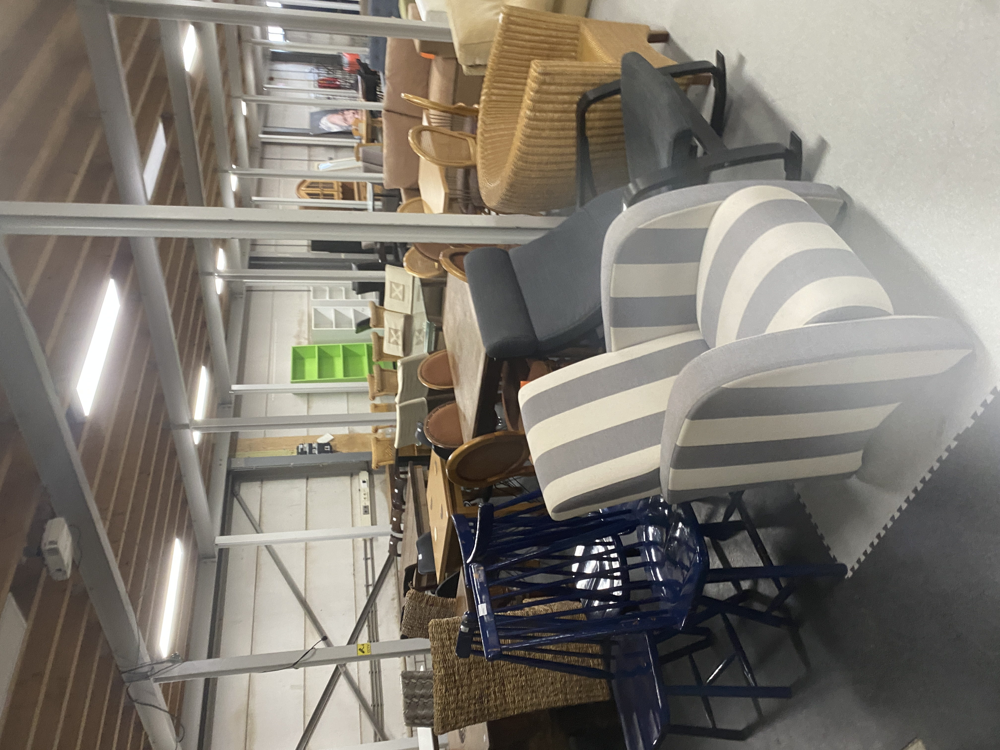

Meubels

De meubels bij de Lokatie zijn heel schoon en intact. Er waren, toen ik het bezocht, heel veel mooie meubels en veel variatie tussen deze meubels. Ze waren goed geprijsd en zou ik dus geen reden zien tot nieuwe producten halen in plaats van alternatieven die goedkoper en even schoon/mooi zijn.